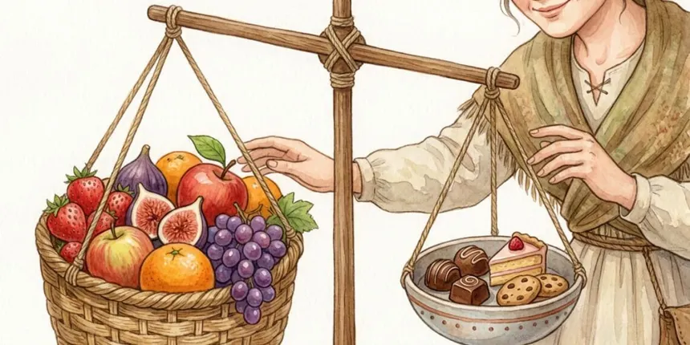
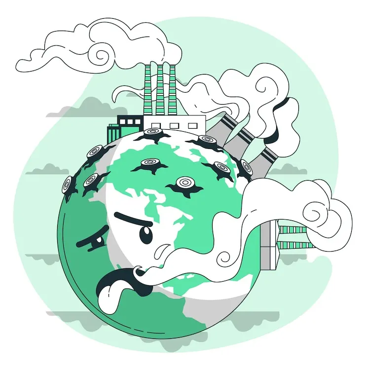

O consumo de bombons pode trazer impactos positivos e negativos na vida das pessoas e no ambiente.
Os bombons são associados a momentos de prazer, comemoração e afeto. São muito usados como presentes e lembranças em datas especiais. Porém, devem ser consumidos com moderação, pois muitos possuem grande quantidade de açúcar e gordura, podendo contribuir para ganho de peso e problemas de saúde quando consumidos em excesso.

A produção de bombons envolve o cultivo do cacau, o uso de água, energia, embalagens plásticas ou metalizadas e transporte. Quando as embalagens não são descartadas corretamente, podem gerar lixo e poluição ambiental.

Por isso, é importante incentivar o consumo consciente, a reciclagem das embalagens e a produção responsável do cacau.